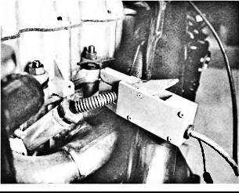

Подключение стробоскопа для проверки или регулировки угла опережения зажигания

Для проверки или регулировки угла опережения зажигания подключите к двигателю стробоскоп следующим образом:
1. Подсоедините провода питания стробоскопа к клеммам аккумуляторной батареи: красный провод — к плюсовой клемме, а черный — к минусовой клемме.
2. Клещами индуктивного датчика стробоскопа охватите высоковольтный провод свечи зажигания цилиндра №1 (рис. 5.34).
Рис. 5.34. Клещи индуктивного датчика стробоскопа охватывают высоковольтный провод свечи зажигания цилиндра №1 в четырехцилиндровом двигателе компании General Motors, оснащенном системой зажигания с механическим распределителем зажигания. Хотя в большинстве двигателей компьютер регулирует угол опережения зажигания, но номинальный (первоначальный) угол все равно можно и нужно проверить и отрегулировать (если это возможно) в процессе тщательной проверки работы двигателя
Как правильно определить цилиндр №1
Приведенная ниже информация поможет вам определить цилиндр №1:
1. Четырех- и шестицилиндровые двигатели.
Во всех рядных четырех- и шестицилиндровых двигателя цилиндр №1 — это самый передний цилиндр двигателя.
2. Шести- и восьмицилиндровые V-образные двигатели.
В большинстве V-образных двигателей цилиндр №1 —это передний левый цилиндр двигателя (стоящий в ряду, находящемся на стороне водительского сиденья). Исключением являются двигатели автомобилей Ford и некоторых моделей Cadillac, у которых цилиндр №1 — передний правый (стоящий в ряду, находящемся на стороне переднего пассажирского сиденья).
3. Двигатели с поперечным расположением.
В большинстве моделей переднеприводных автомобилей с поперечным расположением двигателя цилиндр №1 — это крайний справа цилиндр (на стороне пассажирского сиденья) (высоковольтный провод свечи зажигания которого находится ближе всех к приводному(ым) ремню(ям)).
Проверка поворотом ключа
При правильно установленном угле опережения зажигания прогретый двигатель должен заводиться сразу же после поворота ключа зажигания. Если двигатель, перед тем как завестись, долго запускается, то причиной этого может быть запаздывание зажигания. Если двигатель прокручивается медленно, то возможно, угол опережения зажигания слишком велик. Но если двигатель заводится сразу же, это свидетельство того, что установленный угол опережения зажигания обычно достаточно близок к требуемому, пусть даже и не выставлен точно в соответствии с техническими требованиями. В случае возникновения трудностей с запуском двигателя сначала проверьте правильность установки угла опережения зажигания, и только после этого переходите к диагностике топливной системы или системы электрического пуска. Этот способ проверки может помочь быстро и без каких-либо инструментов и приборов оценить, не связано ли нарушение работы двигателя с неправильной установкой угла опережения зажигания.
Пользуйтесь следующим эмпирическим правилом: если неизвестно, какой из цилиндров в данном конкретном двигателе — цилиндр №1, то это самый передний цилиндр, если смотреть сверху (исключением являются восьмицилиндровые V-образные двигатели компании Pontiac). На рис. 5.35 приведены схемы расположения цилиндра №1 в двигателях разных производителей.
ПРИМЕЧАНИЕ
В двигателях ряда моделей автомобилей установка угла зажигания производится не по цилиндру №1. Например, в шестицилиндровых рядных двигателях автомобилей Jaguar, выпущенных до 1988 г., она производилась по цилиндру №6, но цилиндры нумеровались от перегородки моторного отсека вперед. Таким образом, цилиндр №6 был самым передним цилиндром. В восьмицилиндровых V-образных двигателях автомобилей компании International Harvester (Navistar) угол опережения зажигания устанавливается по цилиндру №8. Обязательно ознакомьтесь с техническими требованиями и конкретными методиками проверки, составленными для того двигателя, который вы проверяете.
СОВЕТ
Если до цилиндра №1 сложно добраться, например, он находится у самой перегородки моторного отсека или близко к выпускному коллектору, используйте вместо него оппо-зитный, в порядке зажигания, цилиндр. На синхронизации стробоскопического освещения такая замена совершенно не отразится и положение установочной метки по отношению к указателю или градусной шкале, видимое при стробоскопическом освещении, останется на том же месте.
1 Гаситель крутильных колебаний в современных двигателях вмоь вляется привод всех навесных агрегатов двигателя. Очень часто